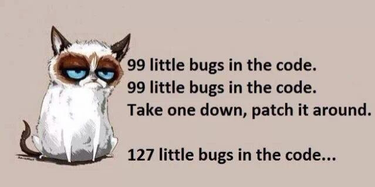
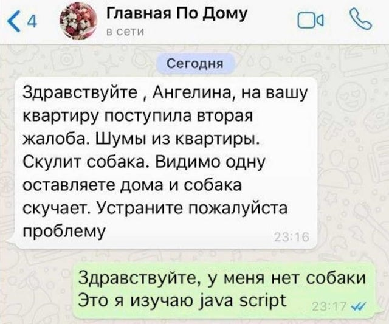

Привіт, мене звати Юрій, мені 24 роки і я вирішив стати Front-end розробником.
Все почалося з того, що я вирішив змінити роботу. Спочатку я планував продовжити роботу в технічній сфері, але моя подруга запропонувала спробувати себе в ІТ, в компанію де вона працювала якраз була потрібна людина на поизцію QA engineer.
Я пройшов курси по основам тестування програмного забезпечення, прочитав літературу, яку вона мені порекомендувала і подав резюме в компанію. Пройшовши інтерв'ю з HR-менеджером мені запропонували пройти технічну співбесіду, дату якої назначать пізніше, оскільки на проекті дедлайн і немає кому її провести. За цей час я вирішив оновоити свої знання по HTML і CSS, вони були необхідні для роботи і я знав їх на рівні ознайомлення і базових понятть.
Я почав з курсів HTML Academy. Вивчення HTML і CSS було доволі цікавим, але тривало до повідомлення "Щоб продовжити придбайте повний курс". Платити гроші за те що можна було знайти у вільному доступі мені не хотілося , того я почав гуглити альтернативи і випадково натрапив на марафон GoIt по по основам HTML/CSS. Спочатку я просто вчив теги і дивився відеоуроки, а на кінець по макету зверстав сайт резюме.
Мій курс самонавчання перервав телефонний дзвінок. HR-менеджер назначила мені технічну співбесіду. Мої плани на той момент вже трохи змінилися і я хотів займатися верстанням веб-сторінок, але вакансій не було да й досвіду мягко кажучи мало. Мої друзі говорили, що багато девелоперів починали з тестування ПЗ, тому я подумав, що ця вакансія може бути непоганим стартом. Я пройшов співбесіду, але компанія надала перевагу іншому кандидату, який раніше проходив там практику і має досвід. Мене це несильно засмутило, адже я захопився верстанням і розробкою сайтів, і планував розвиватися в цьому напрямку.
Знову треба було з чогось починати. На Ютубі я знайшов відео з версткою лендингів. Спочатку все було більш-менш зрозуміло, а потім коли я перейшов на CSS в мене почалися проблеми. Я знову знайшов онлайн курси, на цей раз іноземні freecodecamp. Їх я пройшов на половину і продовжив верстати по дорозі гуглити і вивчати все інше. Так я міг зупинися на пару днів і почати розбирати флексбокси, псевдоелементи і т.д. Так я зверстав односторінковий сайт, залишалося оживити його добавивши JavaScript.
Це стало черговою проблемою. З програмуванням я був знайомий і до того в ліцеї(Pascal, Delphi) і в університеті(С++), алгоритм роботи мені був зрозумілий, але реалізувати його я не міг. На допомогу знову прийшов ютуб з гуглом. Я реалізував функціонал сайту, але до кінця не розумів як все працює.
Тут почалося моє інтенсивне вивчення JavaScript. В цьому мені допоміг сайт learn.javascript.ru/. На вивчення основ JavaScript я витратив трохи більше місяця. Мені подобалося дізнаватися про особливості мови прогрумування та вирішувати різноманітні задачі.
Далі я захотів навчитися верстати багатосторінкові сайти. Я познайомився із збирачем Gulp і препроцесором SASS, вони спростили верстку сторінок. Результатом моєї роботи є цей сайт. Спочатку він планувався як просто верстка і мій тренувальний полігон, але я захотів переробити його піде себе. Поки в ньому є багато недоробок через те що я поки не володію back-end частиною, але в майбутньому планую освоїти і зробити повноцінний сайт
Багато чого я не розповів про мій процес навчання, наприклад про:
- - мій довгий вибір IDE в якому розробляти
- - знайомство з git і github
- - роботу з DOM деревом
На даний момент шукаю роботу на позицію верстальник або junior Front-end developer, моїх знаннь не так багато, але я готовий вивчати нове і розвиватися.